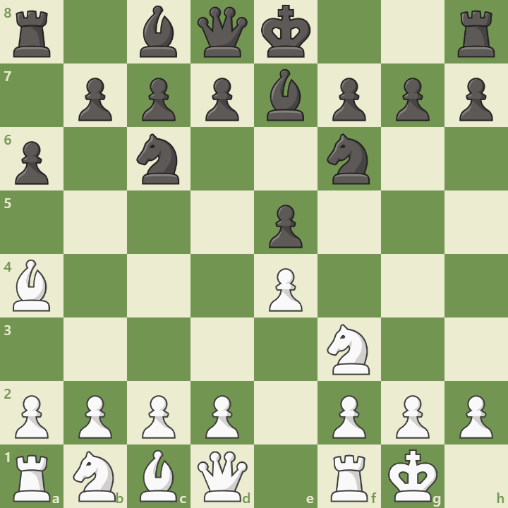

Overview
The Closed Ruy Lopez is a classical opening that begins with:
1. e4 e5 2. Nf3 Nc6 3. Bb5 a6 4. Ba4 Nf6 5. O-O Be7
It leads to rich positional battles and deep strategic themes, often involving maneuvering and central tension.
Opening Diagram
This position arises after 5...Be7, preparing castling and maintaining flexibility.
Main Variations
- Chigorin Variation: ...Na5, ...c5 – queenside pressure
- Zaitsev Variation: ...Bb7, ...Re8 – dynamic central play
- Breyer Variation: ...Nb8 – regrouping for flexibility
Strategic Themes
- Central tension with d4 vs ...d5
- Queenside expansion vs kingside buildup
- Long-term maneuvering and pawn breaks